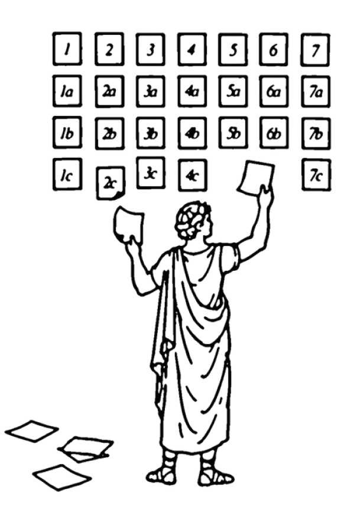
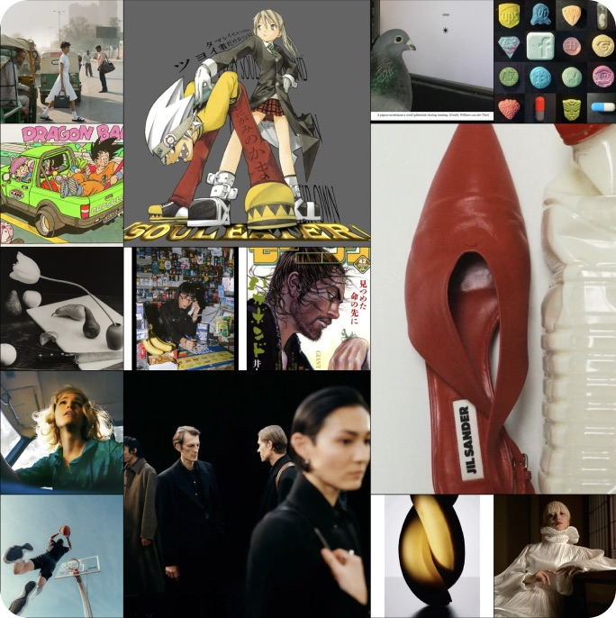

아름다움을 보는
미감은 타고나는 걸까?
아름다움을 알아보는 능력은 후천적으로 학습할수 있는 걸까요? 아름다움의 본질을 알아보기 위해 파티시에, 음악 엔지니어, 필름메이커 등 여러 직종의 사람들과 인터뷰를 진행 해봤습니다.
‘아름다움'의 기준이 무엇인가요? 아름다운 장소도 말씀해 주세요.
스크롤해서 넘기기

아름다움을 알아보는 능력은 후천적으로 학습할수 있는 걸까요? 아름다움의 본질을 알아보기 위해 파티시에, 음악 엔지니어, 필름메이커 등 여러 직종의 사람들과 인터뷰를 진행 해봤습니다.
스크롤해서 넘기기

전체적인 형태와 구성은 정돈되어 있지만 그 안의 한 가지 요소가 예상과 다르게 어긋나 있어, 한 번에 설명되지 않고 만든 사람의 의도와 생각을 따라가게 만드는 것에 끌린다.